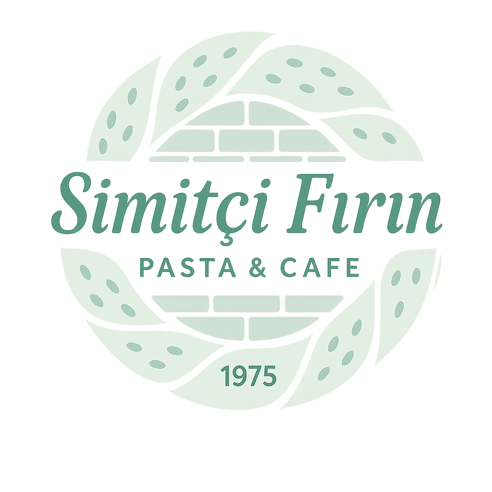

HEMEN ARA:
+90 543 891 94 99
Gebze / Kocaeli

Simitçi Fırın
Pasta & Cafe • 1975
Ana Sayfa
Menü
İletişim
WhatsApp
TÜMÜ
KAHVALTI
SICAKLAR
FİT KAHVALTILAR
TOST ÇEŞİTLERİ
SOĞUK SANDVİÇLER
SİMİT ÇEŞİTLERİ
BÖREK ÇEŞİTLERİ
POĞAÇA ÇEŞİTLERİ
AÇMA ÇEŞİTLERİ
FIRINDAN LEZZETLER
KURABİYE
SÜTLÜ TATLILAR
TEK KİŞİLİK PASTALAR
PASTALAR
ŞERBETLİ TATLILAR
KAHVE
SICAK İÇECEKLER
SOĞUK İÇECEKLER
KAHVALTI
SAHANDA GRUBU
KRUVASAN
BÖREKLER
AÇIK SICAK SANDVİÇLER / SANDVİÇLER
tost-cesitleri
APERATİFLER